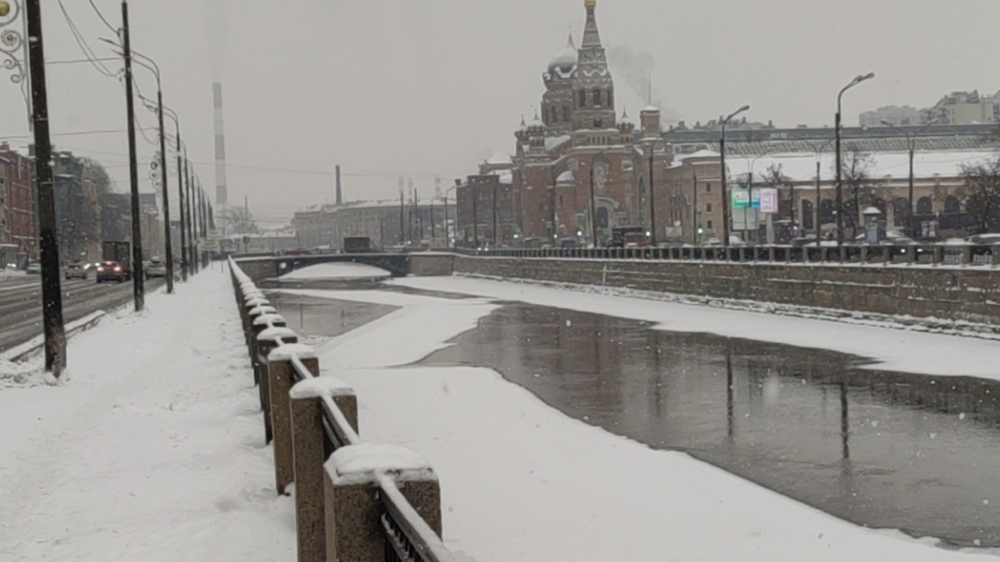
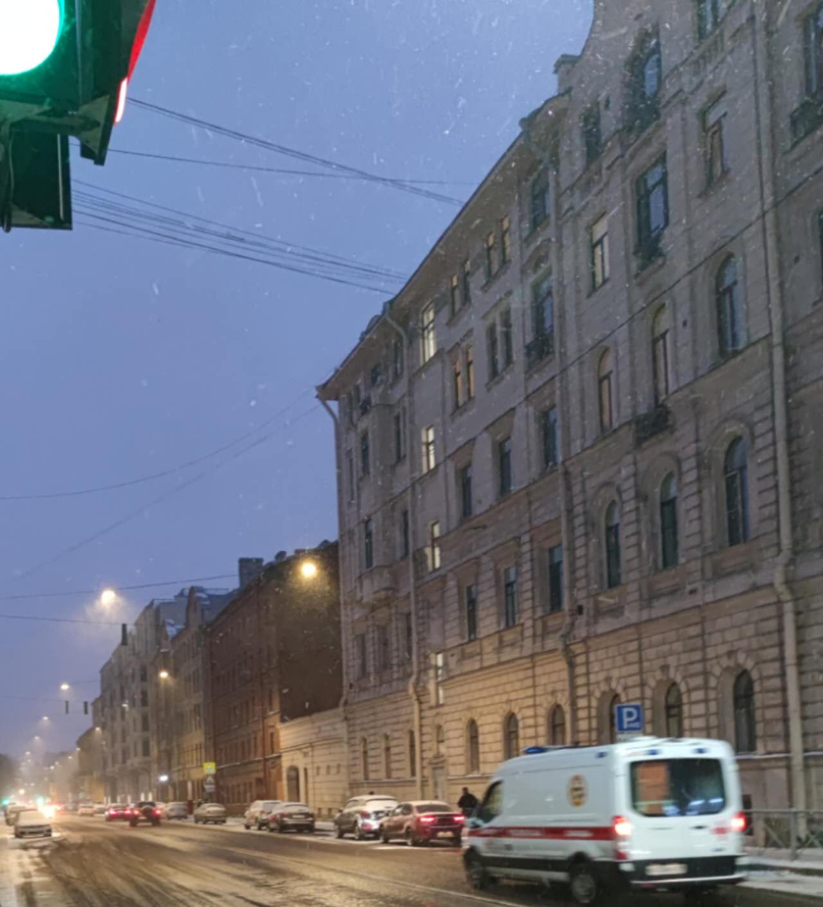
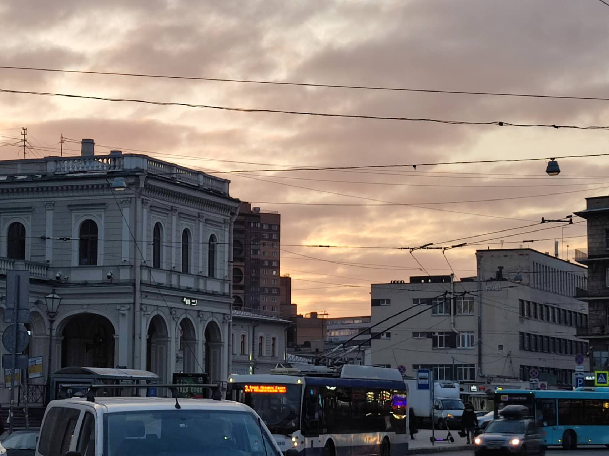
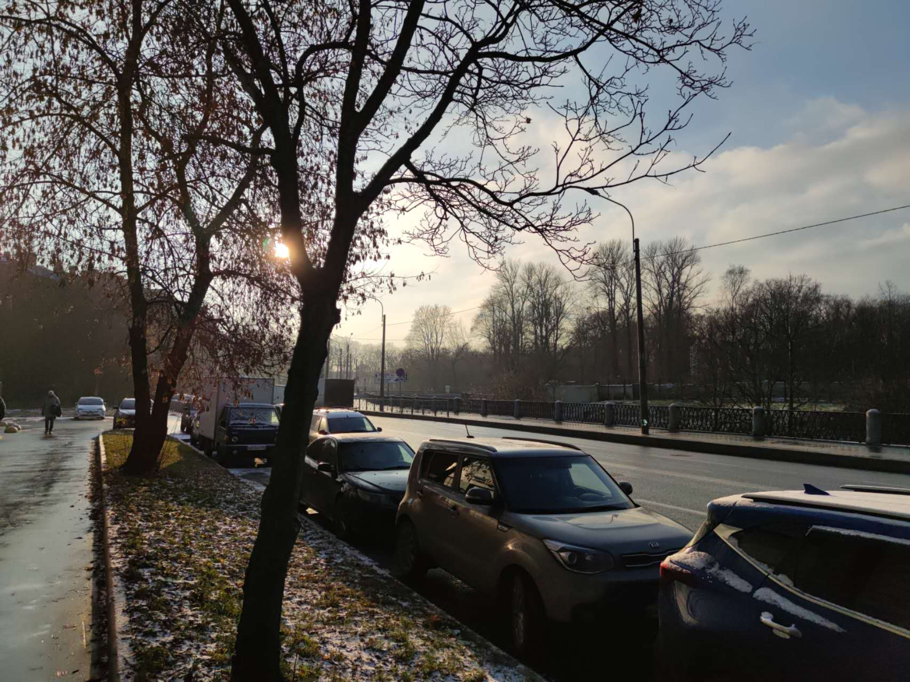
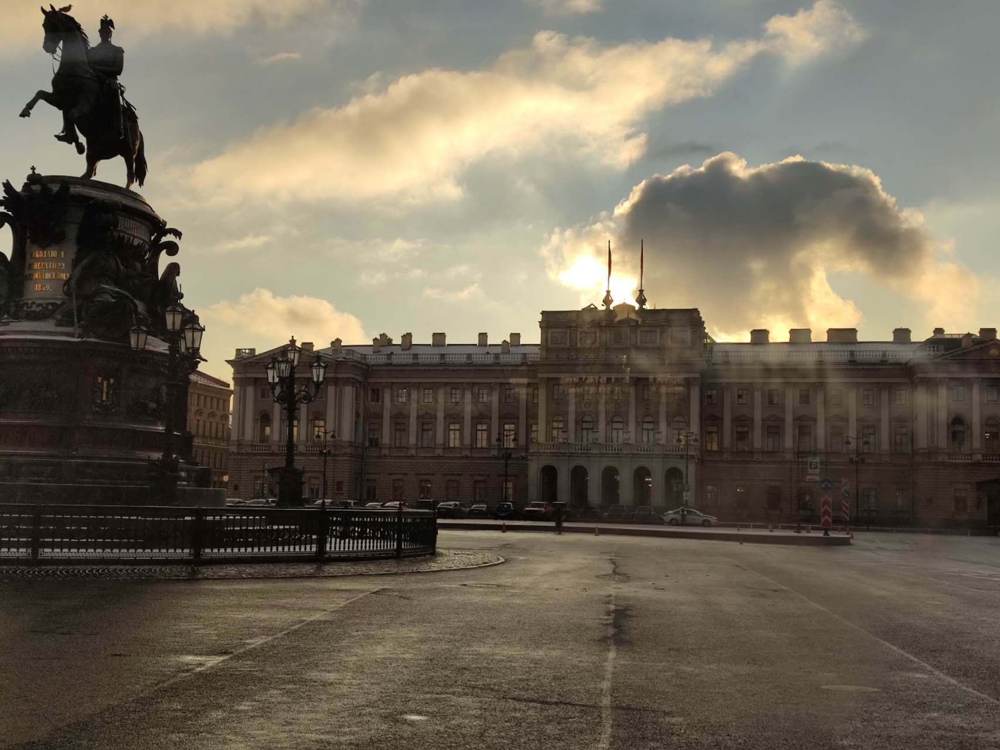
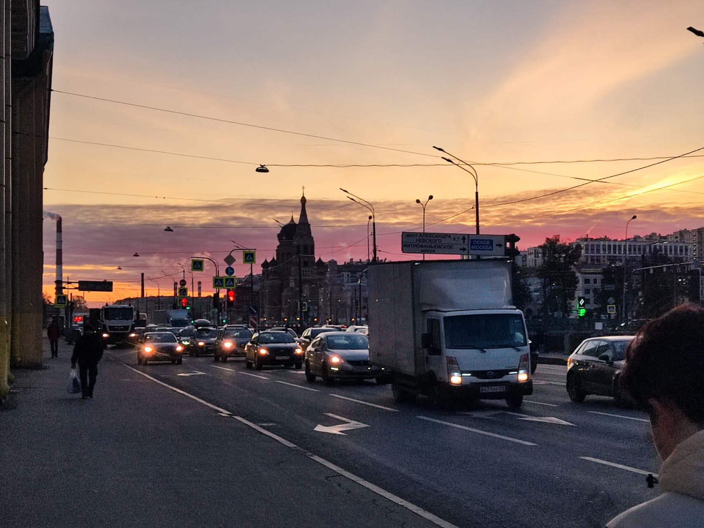

在俄罗斯留学的日子是我人生中难忘的一部分。虽然时间只有两个月，我深深感受到这个国家丰富的文化和悠久的历史，每一座城市都充满了独特的魅力。在这个陌生的土地上，我发现留学生活不仅充满了挑战，更有着令人愉悦的体验。Учеба в России стала незабываемой частью моей жизни. Во-первых, я глубоко погрузился в богатую культуру и долгую историю этой страны. Каждый город обладает уникальным очарованием. Несмотря на вызовы, свойственные студенческой жизни за границей, опыт обучения принёс не только трудности, но и приятные впечатления.
与俄罗斯的同学相处让我感到温馨和友善。尽管语言和文化的差异存在，但我的同学们总是耐心地与我交流，帮助我适应新的环境。我们一起参加各种文化活动，分享彼此的生活经验，这让我在异国他乡找到了温暖的归属感。Общение с российскими однокурсниками было теплым и дружелюбным. Несмотря на различия в языке и культуре, мои товарищи всегда терпеливо общались со мной, помогали мне адаптироваться к новой среде. Мы вместе участвовали в различных культурных мероприятиях, делились своими жизненными опытами, что позволило мне найти теплое чувство принадлежности в чужой стране.
与此同时，我发现俄罗斯的老师们都非常和善。他们对学生充满关爱和耐心，不仅在学业上给予指导，还关心我们的生活。他们积极鼓励学生参与课堂讨论，激发我们的思考能力，使我在学业上不断进步的同时，也提升了我的综合素养。В то же время я обнаружил, что преподаватели в России очень доброжелательные. Они заботятся о студентах и терпеливо относятся к нам, не только помогая в учебе, но и интересуясь нашей жизнью. Они поощряют учеников участвовать в дискуссиях, развивая наш аналитический склад ума. Благодаря этому я не только улучшил свои учебные результаты, но и повысил свой общий уровень образования.
在这个异国他乡，我还有机会参与各种有趣的活动，体验当地的风土人情。这些经历不仅让我的留学生活更加丰富多彩，也让我对俄罗斯文化有了更深刻的理解。В этой чужой стране я также имел возможность участвовать в различных интересных мероприятиях и познакомиться с местными обычаями.Эти впечатления сделали мою учебу более яркой и разнообразной, а также помогли мне лучше понять российскую культуру.
     